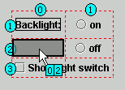
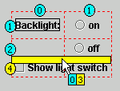

When you build your application visually using GridBag layout,
the visual grid markers help you to move and drop components in the required
position.
To add or move components within GridBag layout:
- Select the component from the palette that you want to add to your
GridBag layout, or click and drag the existing component that you want to
move within your GridBag layout.
- Move your mouse pointer over the position where you want to drop
or move the component. If the space is not occupied, then your cursor will
remain the same and the empty box will turn to dark grey.
- If the cell is already occupied by another component, your cursor
will change to a black circle with a line through it, indicating that you
cannot move or drop in that position.
- If the space is not occupied, your cursor will remain the same and
the empty box will turn to dark grey, indicating the exact cell where the
component will be dropped.
- Just below the cursor, the Design view shows the x and y grid values
for the position where you are about to drop or move your component. The first
number is the x value, which represents the column, and the second number
is the y value, which represents the row.

- If you position your cursor on a row or column boundary, the Design
view shows a yellow vertical or horizontal bar, indicating that a new column
or row number will be added.
- If any new column or row number is being added by your placement,
the background color yellow shows on the cursor x,y indicator and on the column
and row labels. Components that are in rows or columns with yellow circles
will be updated to reflect the new grid x,y values.

- Click or release your mouse to drop the component in the position
that you selected.